정보처리기사 (2020-08-22 기출문제)
1과목: 소프트웨어 설계
1. 요구사항 분석 시에 필요한 기술로 가장 거리가 먼 것은?
- 청취와 인터뷰 질문 기술
- 분석과 중재기술
- 설계 및 코딩 기술
- 관찰 및 모델 작성 기술
(정답률: 90%)

2. 다음 내용이 설명하는 디자인 패턴은?
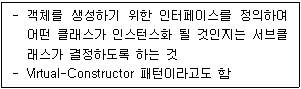
- Visitor패턴
- Observer패턴
- Factory Method 패턴
- Bridge 패턴
(정답률: 73%)
3. 럼바우 객체 지향 분석과 거리가 먼 것은?
- 기능 모델링
- 동적 모델링
- 객체 모델링
- 정적 모델링
(정답률: 92%)
4. 애자일 기법에 대한 설명으로 맞지 않은 것은?
- 절차와 도구보다 개인과 소통을 중요하게 생각한다.
- 계획에 중점을 두어 변경 대응이 난해하다.
- 소프트웨어가 잘 실행되는데 가치를 둔다.
- 고객과의 피드백을 중요하게 생각한다.
(정답률: 92%)
5. 미들웨어 솔루션의 유형에 포함되지 않는 것은?
- WAS
- Web Server
- RPC
- ORB
(정답률: 73%)
6. UML에서 시퀀스 다이어그램의 구성 항목에 해당하지 않는 것은?
- 생명선
- 실행
- 확장
- 메시지
(정답률: 63%)
7. 객체지향에서 정보 은닉과 가장 밀접한 관계가 있는 것은?
- Encapsulation
- Class
- Method
- Instance
(정답률: 89%)
8. 디자인 패턴 중에서 행위적 패턴에 속하지 않는 것은?
- 커맨드 (Command) 패턴
- 옵저버 (Observer) 패턴
- 프로토타입 (Prototype) 패턴
- 상태 (State) 패턴
(정답률: 71%)
9. UI 설계 원칙 중 누구나 쉽게 이해하고 사용할 수 있어야 한다는 원칙은?
- 희소성
- 유연성
- 직관성
- 멀티운용성
(정답률: 93%)
10. 코드의 기본 기능으로 거리가 먼 것은?
- 복잡성
- 표준화
- 분류
- 식별
(정답률: 94%)
11. 다음 ( ) 안에 들어갈 내용으로 옳은 것은?
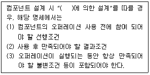
- 협약(Contract)
- 프로토콜(Protocol)
- 패턴(Pattern)
- 관계(Relation)
(정답률: 81%)
12. UML에서 활용되는 다이어그램 중, 시스템의 동작을 표현하는 행위(Behavioral) 다이어그램에 해당하지 않는 것은?
- 유스케이스 다이어그램(Use Case Diagram)
- 시퀀스 다이어그램(Sequence Diagram)
- 활동 다이어그램(Activity Diagram)
- 배치 다이어그램(Deployment Diagram)
(정답률: 71%)
13. 객체 지향 소프트웨어 공학에서 하나 이상의 유사한 객체들을 묶어서 하나의 공통된 특성을 표현한 것은?
- 트랜지션
- 클래스
- 시퀀스
- 서브루틴
(정답률: 92%)
14. 아래의 UML 모델에서 '차' 클래스와 각 클래스의 관계로 옳은 것은?
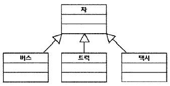
- 추상화 관계
- 의존 관계
- 일반화 관계
- 그룹 관계
(정답률: 75%)
15. 객체지향 소프트웨어 설계시 디자인 패턴을 구성하는 요소로서 가장 거리가 먼 것은?
- 개발자이름
- 문제 및 배경
- 사례
- 샘플코드
(정답률: 93%)
16. 자료 사전에서 자료의 반복을 의미하는 것은?
- =
- ( )
- { }
- [ ]
(정답률: 81%)
17. 객체지향 설계 원칙 중, 서브타입(상속받은 하위 클래스)은 어디에서나 자신의 기반타입(상위클래스)으로 교체할 수 있어야 함을 의미하는 원칙은?
- ISP(Interface Segregation Principle)
- DIP(Dependency Inversion Principle)
- LSP(Liskov Substitution Principle)
- SRP(Single Responsibility Principle)
(정답률: 71%)
18. 자료흐름도(Data Flow Diagram)의 구성요소로 옳은 것은?
- process, data flow, data store, comment
- process, data flow, data store, terminator
- data flow, data store, terminator, data dictionary
- process, data store, terminator, mini-spec
(정답률: 87%)
19. CASE(Computer-Aided Software Engineering)도구에 대한 설명으로 거리가 먼 것은?
- 소프트웨어 개발 과정의 일부 또는 전체를 자동화하기 위한 도구이다.
- 표준화된 개발 환경 구축 및 문서 자동화 기능을 제공한다.
- 작업 과정 및 데이터 공유를 통해 작업자간 커뮤니케이션을 증대한다.
- 2000년대 이후 소개되었으며, 객체지향 시스템에 한해 효과적으로 활용된다.
(정답률: 84%)
20. 인터페이스 요구 사항 검토 방법에 대한 설명이 옳은 것은?
- 리팩토링 : 작성자 이외의 전문 검토 그룹이 요구사항 명세서를 상세히 조사하여 결함, 표준 위배, 문제점 등을 파악
- 동료검토 : 요구 사항 명세서 작성자가 요구 사항 명세서를 설명하고 이해관계자들이 설명을 들으면서 결함을 발견
- 인스펙션 : 자동화된 요구 사항 관리 도구를 이용하여 요구 사항 추적성과 일관성을 검토
- CASE 도구 : 검토 자료를 회의 전에 배포해서 사전 검토한 후 짧은 시간 동안 검토 회의를 진행하면서 결함을 발견
(정답률: 75%)
2과목: 소프트웨어 개발
21. 인터페이스 보안을 위해 네트워크 영역에 적용될 수 있는 솔루션과 거리가 먼 것은?
- IPSec
- SSL
- SMTP
- S-HTTP
(정답률: 87%)
22. 소프트웨어 공학의 기본 원칙이라고 볼 수 없는 것은?
- 품질 높은 소프트웨어 상품 개발
- 지속적인 검증 시행
- 결과에 대한 명확한 기록 유지
- 최대한 많은 인력 투입
(정답률: 94%)
23. 패키지 소프트웨어의 일반적인 제품 품질 요구사항 및 테스트를 위한 국제 표준은?
- ISO/IEC 2196
- IEEE 19554
- ISO/IEC 12119
- ISO/IEC 14959
(정답률: 72%)
24. 다음 중 클린 코드 작성원칙으로 거리가 먼 것은?
- 누구든지 쉽게 이해하는 코드 작성
- 중복이 최대화된 코드 작성
- 다른 모듈에 미치는 영향 최소화
- 단순, 명료한 코드 작성
(정답률: 94%)
25. 블랙박스 테스트의 유형으로 틀린 것은?
- 경계값 분석
- 오류 예측
- 동등 분할 기법
- 조건, 루프 검사
(정답률: 74%)
26. 제어흐름 그래프가 다음과 같을 때 McCabe의 cyclomatic 수는 얼마인가?
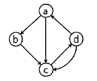
- 3
- 4
- 5
- 6
(정답률: 64%)
27. 다음 자료에 대하여 선택(Selection) 정렬을 이용하여 오름차순으로 정렬하고자 한다. 3회전 후의 결과로 옳은 것은?
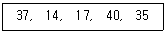
- 14, 17, 37, 40, 35
- 14, 37, 17, 40, 35
- 17, 14, 37, 35, 40
- 14, 17, 35, 40, 37
(정답률: 69%)
28. 형상 관리 도구의 주요 기능으로 거리가 먼 것은?
- 정규화(Normalization)
- 체크인(Check-in)
- 체크아웃(Check-out)
- 커밋(commit)
(정답률: 71%)
29. 다음 트리를 Preorder 운행법으로 운행할 경우 가장 먼저 탐색되는 것은?
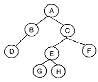
- A
- B
- D
- G
(정답률: 80%)
30. 소프트웨어 품질 목표 중 주어진 시간동안 주어진 기능을 오류없이 수행하는 정도를 나타내는 것은?
- 직관성
- 사용 용이성
- 신뢰성
- 이식성
(정답률: 82%)
31. 알고리즘 설계 기법으로 거리가 먼 것은?
- Divide and Conquer
- Greedy
- Static Block
- Backtracking
(정답률: 53%)
32. 제품 소프트웨어의 형상 관리 역할로 틀린 것은?
- 형상 관리를 통해 이전 리버전이나 버전에 대한 정보에 접근 가능하여 배포본 관리에 유용
- 불필요한 사용자의 소스 수정 제한
- 프로젝트 개발비용을 효율적으로 관리
- 동일한 프로젝트에 대해 여러 개발자 동시 개발 가능
(정답률: 58%)
33. 제품 소프트웨어 패키징 도구 활용 시 고려사항이 아닌 것은?
- 제품 소프트웨어의 종류에 적합한 암호화 알고리즘을 고려한다.
- 추가로 다양한 이기종 연동을 고려한다.
- 사용자 편의성을 위한 복잡성 및 비효율성 문제를 고려한다.
- 내부 콘텐츠에 대한 보안은 고려하지 않는다.
(정답률: 90%)
34. 디지털 저작권 관리(DRM) 기술과 거리가 먼 것은?
- 콘텐츠 암호화 및 키 관리
- 콘텐츠 식별체계 표현
- 콘텐츠 오류 감지 및 복구
- 라이센스 발급 및 관리
(정답률: 82%)
35. 물리데이터 저장소의 파티션 설계에서 파티션 유형으로 옳지 않은 것은?
- 범위분할(Range Partitioning)
- 해시분할(Hash Partitioning)
- 조합분할(Composite Partitioning)
- 유닛분할(Unit Partitioning)
(정답률: 55%)
36. 다음이 설명하는 애플리케이션 통합 테스트 유형은?
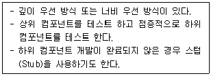
- 하향식 통합 테스트
- 상향식 통합 테스트
- 회귀 테스트
- 빅뱅 테스트
(정답률: 90%)
37. 인터페이스 구현시 사용하는 기술 중 다음 내용이 설명하는 것은?
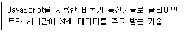
- Procedure
- Trigger
- Greedy
- AJAX
(정답률: 84%)
38. 소프트웨어 재공학이 소프트웨어의 재개발에 비해 갖는 장점으로 거리가 먼 것은?
- 위험부담 감소
- 비용 절감
- 시스템 명세의 오류억제
- 개발시간의 증가
(정답률: 93%)
39. 알파, 베타 테스트와 가장 밀접한 연관이 있는 테스트 단계는?
- 단위 테스트
- 인수 테스트
- 통합 테스트
- 시스템 테스트
(정답률: 70%)
40. 다음 트리의 차수(degree)는?
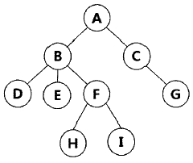
- 2
- 3
- 4
- 5
(정답률: 77%)
3과목: 데이터베이스 구축
41. 릴레이션 R의 모든 결정자(determinant)가 후보키이면 그 릴레이션 R은 어떤 정규형에 속하는가?
- 제 1 정규형
- 제 2 정규형
- 보이스/코드 정규형
- 제 4 정규형
(정답률: 67%)
42. 다음 관계형 데이터 모델에 대한 설명으로 옳은 것은?
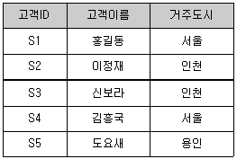
- relation 3개, attribute 3개, tuple 5개
- relation 3개, attribute 5개, tuple 3개
- relation 1개, attribute 5개, tuple 3개
- relation 1개, attribute 3개, tuple 5개
(정답률: 76%)
43. Commit과 Rollback 명령어에 의해 보장 받는 트랜잭션의 특성은?
- 병행성
- 보안성
- 원자성
- 로그
(정답률: 72%)
44. 관계 데이터베이스인 테이블 R1에 대한 아래 SQL 문의 실행결과로 옳은 것은?
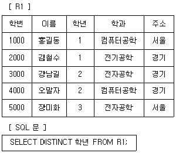
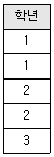
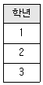
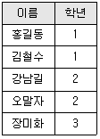
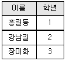
(정답률: 83%)
45. DCL(Data Control Language) 명령어가 아닌 것은?
- COMMIT
- ROLLBACK
- GRANT
- SELECT
(정답률: 84%)
46. 병행제어 기법 중 로킹에 대한 설명으로 옳지 않은 것은?
- 로킹의 대상이 되는 객체의 크기를 로킹 단위라고 한다.
- 데이터베이스, 파일, 레코드 등은 로킹 단위가 될 수 있다.
- 로킹의 단위가 작아지면 로킹 오버헤드가 증가한다.
- 로킹의 단위가 커지면 데이터베이스 공유도가 증가한다.
(정답률: 80%)
47. 관계 데이터모델의 무결성 제약 중 기본키 값의 속성 값이 널(Null)값이 아닌 원자 값을 갖는 성질은?
- 개체 무결성
- 참조 무결성
- 도메인 무결성
- 튜플의 유일성
(정답률: 81%)
48. 뷰(View)의 장점이 아닌 것은?
- 뷰 자체로 인덱스를 가짐
- 데이터 보안 용이
- 논리적 독립성 제공
- 사용자 데이터 관리 용이
(정답률: 64%)
49. 분산 데이터베이스의 투명성(Transparency)에 해당 하지 않는 것은?
- Location Transparency
- Replication Transparency
- Failure Transparency
- Media Access Transparency
(정답률: 66%)
50. 정규화의 목적으로 옳지 않은 것은?
- 어떠한 릴레이션이라도 데이터베이스 내에서 표현 가능하게 만든다.
- 데이터 삽입시 릴레이션을 재구성할 필요성을 줄인다.
- 중복을 배제하여 삽입, 삭제, 갱신 이상의 발생을 야기한다.
- 효과적인 검색 알고리즘을 생성할 수 있다.
(정답률: 83%)
51. 다음에 해당하는 함수 종속의 추론 규칙은?
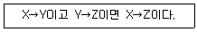
- 분해 규칙
- 이행 규칙
- 반사 규칙
- 결합 규칙
(정답률: 86%)
52. 다음 R과 S 두 릴레이션에 대한 Division 연산의 수행 결과는?
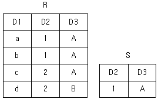
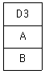
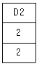
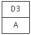
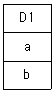
(정답률: 83%)
53. player 테이블에는 player_name, team_id, height 컬럼이 존재한다. 아래 SQL문에서 문법적 오류가 있는 부분은?
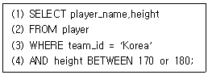
- (1)
- (2)
- (3)
- (4)
(정답률: 85%)
54. 데이터베이스 로그(log)를 필요로 하는 회복 기법은?
- 즉각 갱신 기법
- 대수적 코딩 방법
- 타임 스탬프 기법
- 폴딩 기법
(정답률: 52%)
55. DML(Data Manipulation Language) 명령어가 아닌 것은?
- INSERT
- UPDATE
- ALTER
- DELETE
(정답률: 82%)
56. 다음과 같이 위쪽 릴레이션을 아래쪽 릴레이션으로 정규화를 하였을 때 어떤 정규화 작업을 한 것인가?
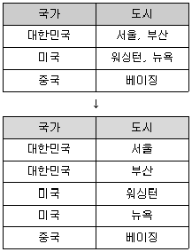
- 제1정규형
- 제2정규형
- 제3정규형
- 제4정규형
(정답률: 76%)
57. 관계대수의 순수관계 연산자가 아닌 것은?
- Select
- Cartesian Product
- Division
- Project
(정답률: 72%)
58. 다음 중 SQL의 집계 함수(aggregation function)가 아닌 것은?
- AVG
- COUNT
- SUM
- CREATE
(정답률: 90%)
59. 릴레이션 조작 시 데이터들이 불필요하게 중복되어 예기치 않게 발생하는 곤란한 현상을 의미하는 것은?
- normalization
- rollback
- cardinality
- anomaly
(정답률: 78%)
60. 릴레이션에 대한 설명으로 거리가 먼 것은?
- 튜플들의 삽입, 삭제 등의 작업으로 인해 릴레이션은 시간에 따라 변한다.
- 한 릴레이션에 포함된 튜플들은 모두 상이하다.
- 애트리뷰트는 논리적으로 쪼갤 수 없는 원자값으로 저장한다.
- 한 릴레이션에 포함된 튜플 사이에는 순서가 있다.
(정답률: 77%)
4과목: 프로그래밍 언어 활용
61. 다음 자바 프로그램 조건문에 대해 삼항 조건 연산자를 사용하여 옳게 나타낸 것은?
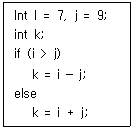
- int i = 7, j = 9;
int k;
k = (i＞j)?(i – j):(i + j); - int i = 7, j = 9;
int k;
k = (i＜j)?(i – j):(i + j); - int i = 7, j = 9;
int k;
k = (i＞j)?(i + j):(i - j); - int i = 7, j = 9;
int k;
k = (i＜j)?(i + j):(i - j);
(정답률: 82%)
62. 다음 내용이 설명하는 소프트웨어 취약점은?
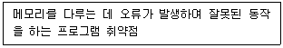
- FTP 바운스 공격
- SQL 삽입
- 버퍼 오버플로
- 디렉토리 접근 공격
(정답률: 78%)
63. 다음 중 bash 쉘 스크립트에서 사용할 수 있는 제어문이 아닌 것은?
- if
- for
- repeat_do
- while
(정답률: 85%)
64. IPv6에 대한 설명으로 틀린 것은?
- 32비트의 주소체계를 사용한다.
- 멀티미디어의 실시간 처리가 가능하다.
- IPv4보다 보안성이 강화되었다.
- 자동으로 네트워크 환경구성이 가능하다.
(정답률: 89%)
65. 효과적인 모듈 설계를 위한 유의사항으로 거리가 먼 것은?
- 모듈간의 결합도를 약하게 하면 모듈 독립성이 향상된다.
- 복잡도와 중복성을 줄이고 일관성을 유지시킨다.
- 모듈의 기능은 예측이 가능해야 하며 지나치게 제한적 이여야 한다.
- 유지보수가 용이해야 한다.
(정답률: 90%)
66. HRN 방식으로 스케줄링 할 경우, 입력된 작업이 다음과 같을 때 처리되는 작업 순서로 옳은 것은?
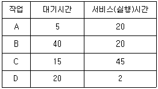
- A→B→C→D
- A→C→B→D
- D→B→C→A
- D→A→B→C
(정답률: 61%)
67. 운영체제에 대한 설명으로 거리가 먼 것은?
- 다중 사용자와 다중 응용프로그램 환경하에서 자원의 현재 상태를 파악하고 자원 분배를 위한 스케줄링을 담당한다.
- CPU, 메모리 공간, 기억 장치, 입출력 장치 등의 자원을 관리한다.
- 운영체제의 종류로는 매크로 프로세서, 어셈블러, 컴파일러 등이 있다.
- 입출력 장치와 사용자 프로그램을 제어한다.
(정답률: 79%)
68. 배치 프로그램의 필수 요소에 대한 설명으로 틀린 것은?
- 자동화는 심각한 오류 상황 외에는 사용자의 개입 없이 동작해야 한다.
- 안정성은 어떤 문제가 생겼는지, 언제 발생했는지 등을 추적할 수 있어야 한다.
- 대용량 데이터는 대용량의 데이터를 처리할 수 있어야 한다.
- 무결성은 주어진 시간 내에 처리를 완료할 수 있어야 하고, 동시에 동작하고 있는 다른 애플리케이션을 방해하지 말아야 한다.
(정답률: 62%)
69. TCP 프로토콜에 대한 설명으로 거리가 먼 것은?
- 신뢰성이 있는 연결 지향형 전달 서비스이다.
- 기본 헤더 크기는 100byte이고 160byte까지 확장 가능하다.
- 스트림 전송 기능을 제공한다.
- 순서제어, 오류제어, 흐름제어 기능을 제공한다.
(정답률: 77%)
70. 다음이 설명하는 응집도의 유형은?
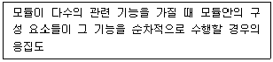
- 기능적 응집도
- 우연적 응집도
- 논리적 응집도
- 절차적 응집도
(정답률: 81%)
71. OSI-7Layer에서 링크의 설정과 유지 및 종료를 담당하며, 노드간의 오류제어와 흐름제어 기능을 수행하는 계층은?
- 데이터링크 계층
- 물리 계층
- 세션 계층
- 응용 계층
(정답률: 79%)
72. 다음 중 가장 결합도가 강한 것은?
- data coupling
- stamp coupling
- common coupling
- control coupling
(정답률: 64%)
73. 메모리 관리 기법 중 Worst fit 방법을 사용할 경우 10K 크기의 프로그램 실행을 위해서는 어느 부분에 할당되는가?
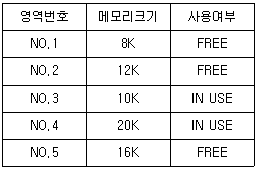
- NO.2
- NO.3
- NO.4
- NO.5
(정답률: 69%)
74. 200.1.1.0/24 네트워크를 FLSM 방식을 이용하여 10개의 Subnet으로 나누고 ip subnet-zero를 적용했다. 이때 서브네팅된 네트워크 중 10번째 네트워크의 broadcast IP주소는?
- 200.1.1.159
- 201.1.5.175
- 202.1.11.254
- 203.1.255.245
(정답률: 52%)
75. 다음은 사용자로부터 입력받은 문자열에서 처음과 끝의 3글자를 추출한 후 합쳐서 출력하는 파이썬 코드에서 ㉠에 들어갈 내용은?
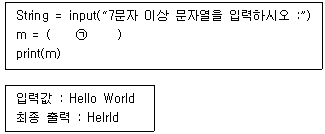
- string[1:3] + string[-3:]
- string[:3] + string[-3:-1]
- string[0:3] + string[-3:]
- string[0:] + string[:-1]
(정답률: 73%)
76. 파이썬의 변수 작성 규칙 설명으로 옳지 않은 것은?
- 첫 자리에 숫자를 사용할 수 없다.
- 영문 대문자/소문자, 숫자, 밑줄(_)의 사용이 가능하다.
- 변수 이름의 중간에 공백을 사용할 수 있다.
- 이미 사용되고 있는 예약어는 사용할 수 없다.
(정답률: 84%)
77. 어떤 모듈이 다른 모듈의 내부 논리 조직을 제어하기 위한 목적으로 제어신호를 이용하여 통신하는 경우이며, 하위 모듈에서 상위 모듈로 제어신호가 이동하여 상위 모듈에게 처리 명령을 부여하는 권리 전도현상이 발생하게 되는 결합도는?
- data coupling
- stamp coupling
- control coupling
- common coupling
(정답률: 80%)
78. 다음 C 프로그램의 결과 값은?
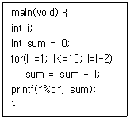
- 15
- 19
- 25
- 27
(정답률: 79%)
79. UNIX에서 새로운 프로세스를 생성하는 명령어는?
- ls
- cat
- fork
- chmod
(정답률: 68%)
80. C언어에서 정수 자료형으로 옳은 것은?
- int
- float
- char
- double
(정답률: 88%)
5과목: 정보시스템 구축관리
81. 물리적인 사물과 컴퓨터에 동일하게 표현되는 가상의 모델로 실제 물리적인 자산 대신 소프트웨어로 가상화함으로써 실제 자산의 특성에 대한 정확한 정보를 얻을 수 있고, 자산 최적화, 돌발사고 최소화, 생산성 증가 등 설계부터 제조, 서비스에 이르는 모든 과정의 효율성을 향상시킬 수 있는 모델은?
- 최적화
- 실행 시간
- 디지털 트윈
- N-Screen
(정답률: 73%)
82. 정보보안의 3대 요소에 해당하지 않는 것은?
- 기밀성
- 휘발성
- 무결성
- 가용성
(정답률: 88%)
83. 다음 빈칸에 알맞은 기술은
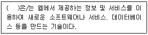
- Quantum Key Distribution
- Digital Rights Management
- Grayware
- Mashup
(정답률: 73%)
84. 기능점수(Functional Point)모형에서 비용산정에 이용되는 요소가 아닌 것은?
- 클래스 인터페이스
- 명령어(사용자 질의수)
- 데이터파일
- 출력보고서
(정답률: 42%)
85. 블록 암호화 방식이 아닌 것은?
- DES
- RC4
- AES
- SEED
(정답률: 65%)
86. Putnam 모형을 기초로 해서 만든 자동화 추정 도구는?
- SQLR/30
- SLIM
- MESH
- NFV
(정답률: 73%)
87. 큰 숫자를 소인수 분해하기 어렵다는 기반 하에 1978년 MIT에 의해 제안된 공개키 암호화 알고리즘은?
- DES
- ARIA
- SEED
- RSA
(정답률: 78%)
88. COCOMO 모델의 프로젝트 유형으로 거리가 먼 것은?
- Organic
- Semi-detached
- Embedded
- Sequentail
(정답률: 81%)
89. 빅데이터 분석 기술 중 대량의 데이터를 분석하여 데이터 속에 내재되어 있는 변수 사이의 상호관례를 규명하여 일정한 패턴을 찾아내는 기법은?
- Data Mining
- Wm-Bus
- Digital Twin
- Zigbee
(정답률: 80%)
90. 기존 무선 랜의 한계 극복을 위해 등장하였으며, 대규모 디바이스의 네트워크 생성에 최적화되어 차세대 이동통신, 홈네트워킹, 공공 안전 등의 특수목적을 위한 새로운 방식의 네트워크 기술을 의미하는 것은?
- Software Defined Perimeter
- Virtual Private Network
- Local Area Network
- Mesh Network
(정답률: 62%)
91. DDoS 공격과 연관이 있는 공격 방법은?
- Secure shell
- Tribe Flood Network
- Nimda
- Deadlock
(정답률: 68%)
92. CPM 네트워크가 다음과 같을 때 임계경로의 소요기일은?
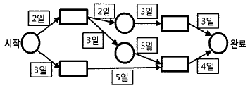
- 10일
- 12일
- 14일
- 16일
(정답률: 75%)
93. RIP(Routing Information Protocol)에 대한 설명으로 틀린 것은?
- 거리 벡터 라우팅 프로토콜이라고도 한다.
- 소규모 네트워크 환경에 적합하다.
- 최대 홉 카운트를 115홉 이하로 한정하고 있다.
- 최단경로탐색에는 Bellman-Ford 알고리즘을 사용한다.
(정답률: 73%)
94. 소프트웨어 생명주기 모형 중 고전적 생명주기 모형으로 선형 순차적 모델이라고도 하며, 타당성 검토, 계획, 요구사항 분석, 구현, 테스트, 유지보수의 단계를 통해 소프트웨어를 개발하는 모형은?
- 폭포수 모형
- 애자일 모형
- 컴포넌트 기반 방법론
- 6GT 모형
(정답률: 89%)
95. 소프트웨어 개발 모델 중 나선형 모델의 4가지 주요 활동이 순서대로 나열된 것은?
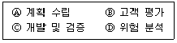
- Ⓐ-Ⓑ-Ⓓ-Ⓒ 순으로 반복
- Ⓐ-Ⓓ-Ⓒ-Ⓑ 순으로 반복
- Ⓐ-Ⓑ-Ⓒ-Ⓓ 순으로 반복
- Ⓐ-Ⓒ-Ⓑ-Ⓓ 순으로 반복
(정답률: 82%)
96. 전자 칩과 같은 소프트웨어 부품, 즉 블록(모듈)을 만들어서 끼워 맞추는 방법으로 소프트웨어를 완성시키는 재사용 방법은?
- 합성 중심
- 생성 중심
- 분리 중심
- 구조 중심
(정답률: 73%)
97. 다음 JAVA코드에서 밑줄로 표시된 부분에는 어떤 보안 약점이 존재하는가? (단, key는 암호화 키를 저장하는 변수이다.)
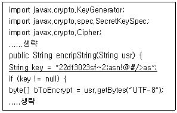
- 무결성 검사 없는 코드 다운로드
- 중요 자원에 대한 잘못된 권한 설정
- 하드코드된 암호화 키 사용
- 적절한 인증없는 중요 기능 허용
(정답률: 78%)
98. 소프트웨어 개발 표준 중 소프트웨어 품질 및 생산성 향상을 위해 소프트웨어 프로세스를 평가 및 개선하는 국제 표준은?
- SCRUM
- ISO/IEC 12509
- SPICE
- CASE
(정답률: 69%)
99. 실무적으로 검증된 개발보안 방법론 중 하나로써 SW보안의 모범 사례를 SDLC(Software Development Life Cycle)에 통합한 소프트웨어 개발 보안 생명주기 방법론은?
- CLASP
- CWE
- PIMS
- Seven Touchpoints
(정답률: 55%)
100. 다음 LAN의 네트워크 토폴로지는?
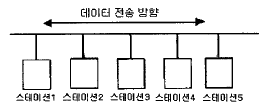
- 버스형
- 성형
- 링형
- 그물형
(정답률: 90%)